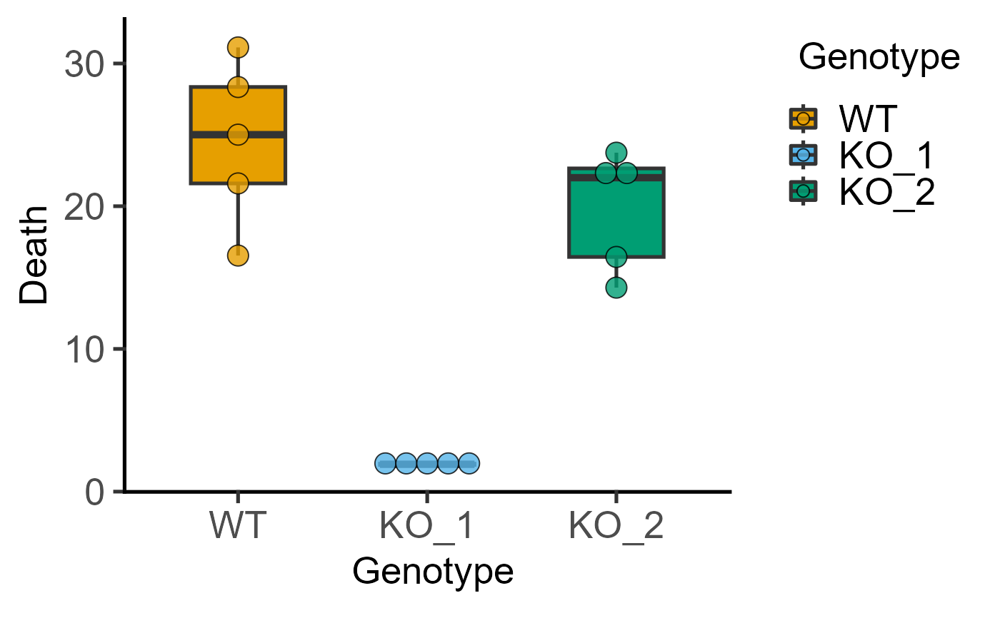
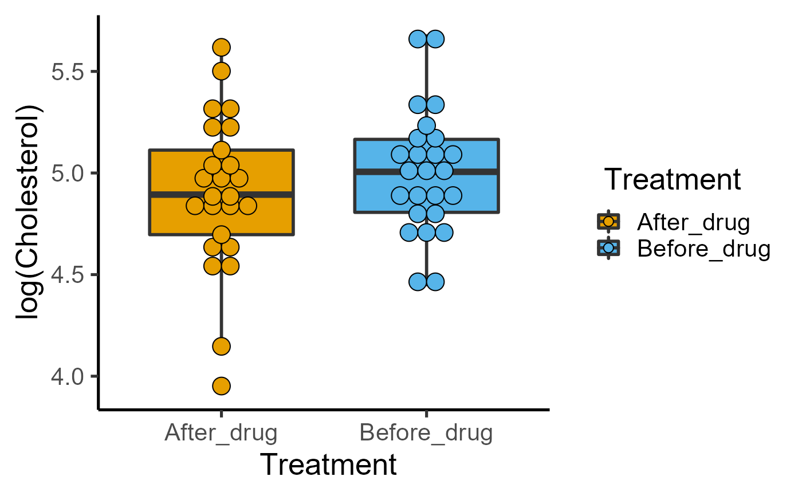
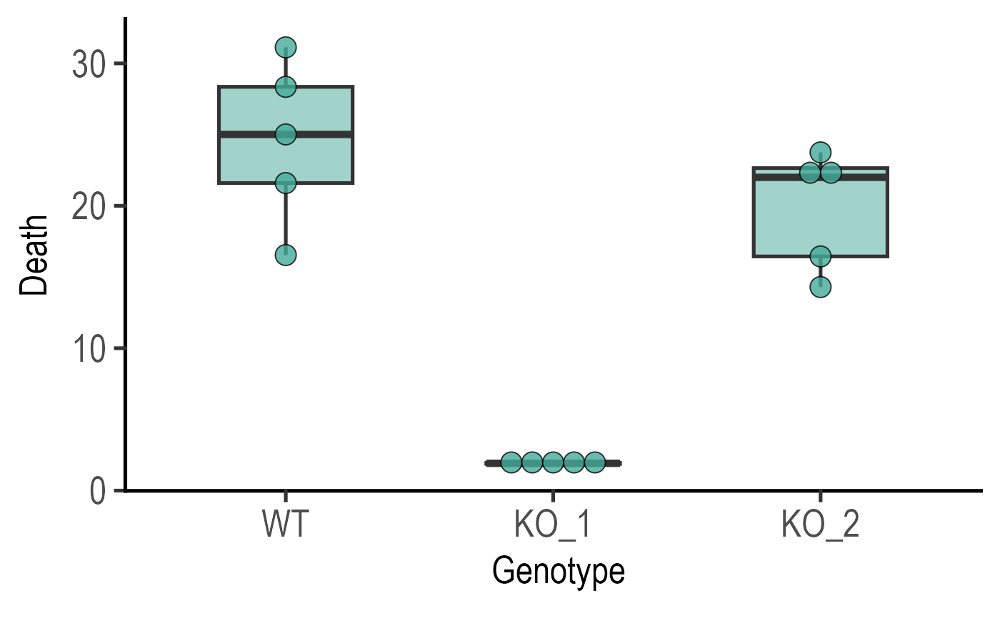

There are three types of plot_dot_ functions that plot data as "dots" using the geom_dotplot geometry. They all take a data table, a categorical X variable and a numeric Y variable.
plot_dotbar_sd (bar & SD, SEM or CI95 error bars)
plot_dotbox (box & whiskers)
plot_dotviolin (box & whiskers, violin)
plot_dotbox(
data,
xcol,
ycol,
facet,
dotsize = 1.5,
d_alpha = 0.8,
b_alpha = 1,
bwid = 0.5,
TextXAngle = 0,
LogYTrans,
LogYBreaks = waiver(),
LogYLabels = waiver(),
LogYLimits = NULL,
facet_scales = "fixed",
fontsize = 20,
dotthick,
bthick,
ColPal = c("okabe_ito", "all_grafify", "bright", "contrast", "dark", "fishy", "kelly",
"light", "muted", "pale", "r4", "safe", "vibrant"),
ColSeq = TRUE,
ColRev = FALSE,
SingleColour = "NULL",
...
)a data table object, e.g. data.frame or tibble.
name of the column to plot on X axis. This should be a categorical variable.
name of the column to plot on quantitative Y axis. This should be a quantitative variable.
add another variable from the data table to create faceted graphs using ggplot2facet_wrap.
size of dots relative to binwidth used by geom_dotplot. Default set to 1.5, increase/decrease as needed.
fractional opacity of dots, default set to 0.8 (i.e., 80% opacity).
fractional opacity of boxes, default set to 1.
width of boxplots; default 0.5.
orientation of text on X-axis; default 0 degrees. Change to 45 or 90 to remove overlapping text.
transform Y axis into "log10" or "log2"
argument for ggplot2[scale_y_continuous] for Y axis breaks on log scales, default is waiver(), or provide a vector of desired breaks.
argument for ggplot2[scale_y_continuous] for Y axis labels on log scales, default is waiver(), or provide a vector of desired labels.
a vector of length two specifying the range (minimum and maximum) of the Y axis.
whether or not to fix scales on X & Y axes for all facet facet graphs. Can be fixed (default), free, free_y or free_x (for Y and X axis one at a time, respectively).
parameter of base_size of fonts in theme_classic, default set to size 20.
thickness of dot border (stroke parameter of geom_dotplot), default set to fontsize/22.
thickness (in 'pt' units) of boxplot lines; default = fontsize/22.
grafify colour palette to apply, default "okabe_ito"; see graf_palettes for available palettes.
logical TRUE or FALSE. Default TRUE for sequential colours from chosen palette. Set to FALSE for distant colours, which will be applied using scale_fill_grafify2.
whether to reverse order of colour within the selected palette, default F (FALSE); can be set to T (TRUE).
a colour hexcode (starting with #), a number between 1-154, or names of colours from grafify or base R palettes to fill along X-axis aesthetic. Accepts any colour other than "black"; use grey_lin11, which is almost black.
any additional arguments to pass to ggplot2geom_boxplot or ggplot2geom_dotplot.
This function returns a ggplot2 object of class "gg" and "ggplot".
Related plot_scatter_ variants show data symbols using the geom_point geometry. These are plot_scatterbar_sd (or SEM or CI95 error bars), plot_scatterbox and plot_scatterviolin. Over plotting in plot_scatter variants can be reduced with the jitter argument.
The X variable is mapped to the fill aesthetic of dots, symbols, bars, boxes and violins.
Colours can be changed using ColPal, ColRev or ColSeq arguments. Colours available can be seen quickly with plot_grafify_palette.
ColPal can be one of the following: "okabe_ito", "dark", "light", "bright", "pale", "vibrant, "muted" or "contrast".
ColRev (logical TRUE/FALSE) decides whether colours are chosen from first-to-last or last-to-first from within the chosen palette.
ColSeq decides whether colours are picked by respecting the order in the palette or the most distant ones using colorRampPalette.
If you prefer a single colour for the graph, use the SingleColour argument.
plot_dotbox(data = data_1w_death,
xcol = Genotype, ycol = Death)
#> Bin width defaults to 1/30 of the range of the data. Pick better value with
#> `binwidth`.

plot_dotbox(data = data_1w_death,
xcol = Genotype, ycol = Death,
ColPal = "vibrant", b_alpha = 0.5)
#> Bin width defaults to 1/30 of the range of the data. Pick better value with
#> `binwidth`.

plot_dotbox(data = data_1w_death,
xcol = Genotype, ycol = Death,
SingleColour = "safe_bluegreen", b_alpha = 0.5)
#> Bin width defaults to 1/30 of the range of the data. Pick better value with
#> `binwidth`.
